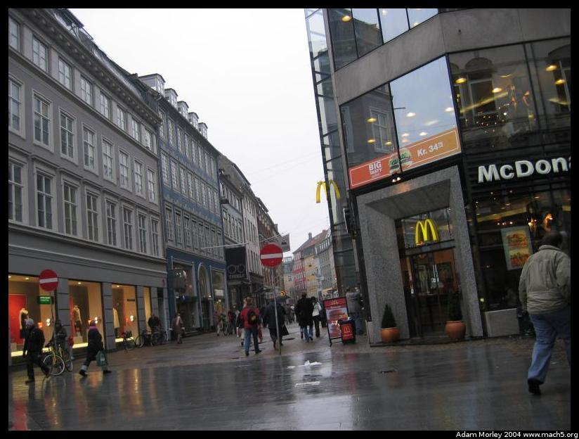
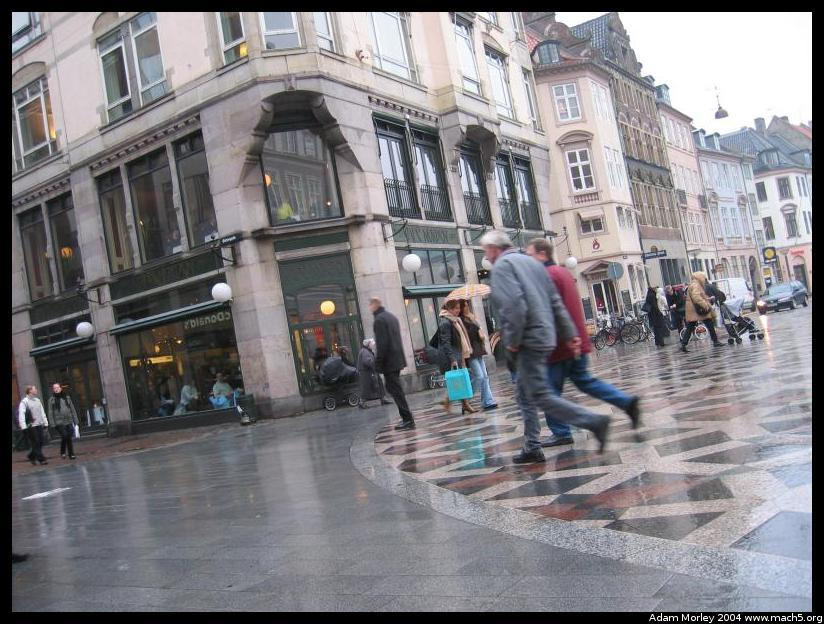
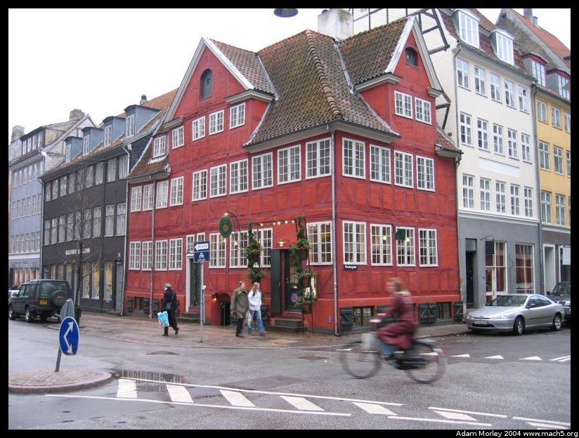
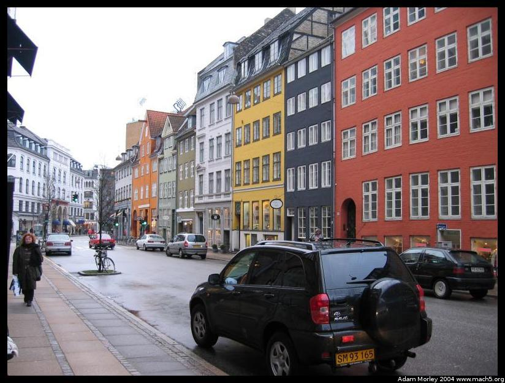
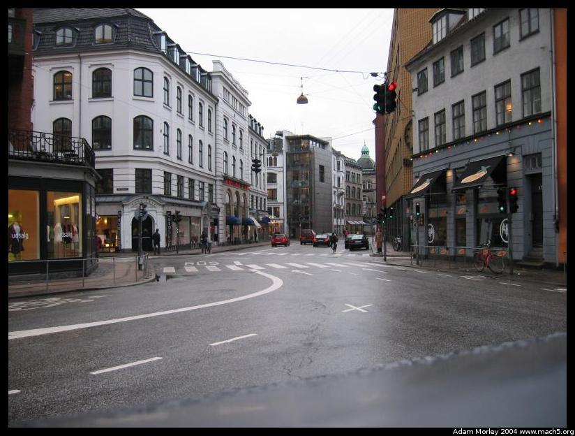

One day when I had some free time I took a walk to the East. I still take these walks, but don't photograph as often.

Taken along the walking street called Strøget. McDonalds really is everywhere.
Strøget from the other side of the street. Notice the carriage almost dead-center -- its a baby, left outside. Common site in Denmark.
Pretty red building. Walking people. Biking people. That's Copenhagen.
More buildings. There are no boring buildings downtown it seems. All of them are older than anyone I know, and all worthy of a postcard.
Another picture-perfect street.My walk ended up taking me to Rosenburg Castle home of the Crown Jewels.
Adam can be reached at adam dot morley at gmail dot com